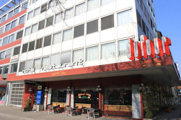
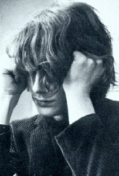
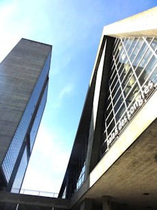
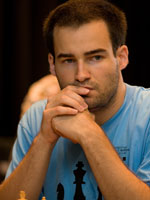
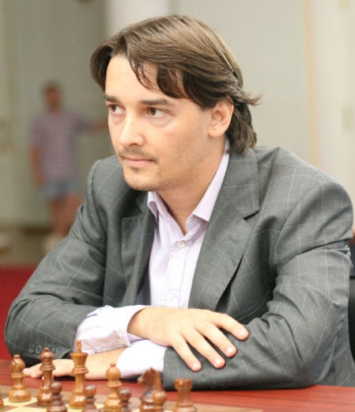
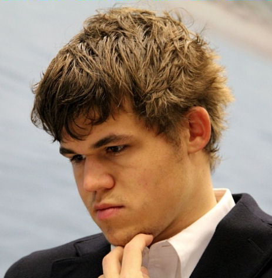
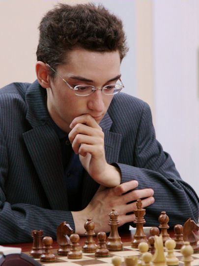

| JAN VAN REEK |
|
Pgn International Chess Festival Biel Zip-file CB International Chess Festival Biel The first Masters Open was played at Hotel Restaurant Dufour in Biel from 20 until 27 vii 1968. The first and second Masters Open were special by the participation of the young Jan Timman. Number 46 of the Masters Open has been played in 2013. Our attention goes to the Closed
Grandmasters events, played in Biel. An interzonal accompanied
the ninth Open Masters. It happened at the Kongresshaus from 11
vii until 6 viii 1976. The event was named 'Internationales
Schachfestival' or 'Festival internationales d'échecs' from 1977. Many groups became a part of the
annual event. Since that time a grandmaster event has been included in the
festival, except for 1978. The number of participants grew to
more than one thousand. Main sponsor is the Schweizerische
Kreditanstalt (SKA) or Crédit Suisse. Sometimes the main
group was named after the sponsor. An incredibly strong Swiss
tournament was the FIDE Interzonal of 1993. Ten participants
qualified as candidates. Karpov participated in 1992, 1996 and
1997. Support by the bank stopped in 1997. |
|  |  |  |
| Hotel Restaurant Dufour | Young Timman | Kongresshaus in Biel |
Thereafter, new sponsors were found each year. Jeroen Piket won in 1999. Six grandmasters were playing double rounds in most tournaments during this time. Viktor Kortschnoj won the tournament at the age of seventy. Morozevich triumphed three times, after he 'returned' to chess. The local hero was Yannick Pelletier. He became third twice. The future world champion Magnus Carlsen made his debut in 2005. He won two times during six participations. The main group became a battlefield for young talents. Vachier Lagrave, Caruana and Giri took part. Sometimes the event was decided by a playoff. Soccer scores were introduced in 2011. Four men carried out the playoff in 2013.
|  |  |  |  |
| Yannick Pelletier lives in Biel | Alexander Morozevich | Magnus Carlsen | Fabiano Caruana |
Winners of the Grandmaster Group
|
1976 Larsen (interzonal) 1977 Miles 1979 Kortschnoj 1980 Gruenfeld 1981 Lobron and Hort 1982 Nunn and Gheorghiu 1983 Miles and Nunn 1984 Hort and Hübner 1985 Vaganian (interzonal) 1986 Polugaevsky and Lobron 1987 Gulko 1988 I.Sokolov and Gulko 1989 Ivanchuk 1990 Karpov 1991 Shirov 1992 Karpov 1993 Gelfand (interzonal) 1994 Gavrikov 1995 Dreev |
1996 Karpov 1997 Anand 1998 Palac 1999 Piket 2000 Svidler 2001 Kortschnoj 2002 Smirin 2003 Morozevich 2004 Morozevich 2005 Gelfand and Volokitin 2006 Morozevich 2007 Carlsen (playoff) 2008 Alekseev (playoff) 2009 Vachier Lagrave 2010 Caruana (playoff) 2011 Carlsen 2012 Wang Hao 2013 Vachier Lagrave (playoff) 2014 Vachier Lagrave |